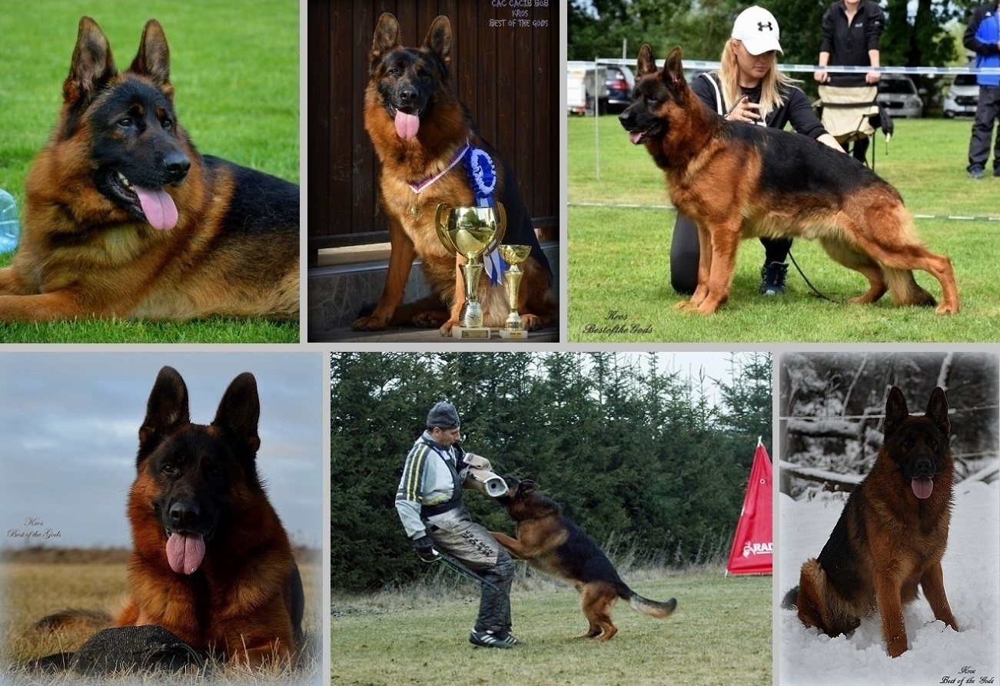

Kros Best of the Gods DOB: July 7, 2016. SV-certified hips and elbows Show Titles: CAC, CACIB, BOB, V1, VT OV, SG2 winner CZ 2017. Working Titles: BH, ZVV1, FPR3, IGP1, SPR2 Class1 Kros was born, raised, and trained in the Czech Republic where he became a distinguished dog in the show and working arenas. He was imported into the U.S. and currently resides in Pennsylvania at Watchman German Shepherd Kennels. Follow this link to see Kros' pedigree, photos, and progeny
*photos of Kros taken from Best of the Gods Kennel